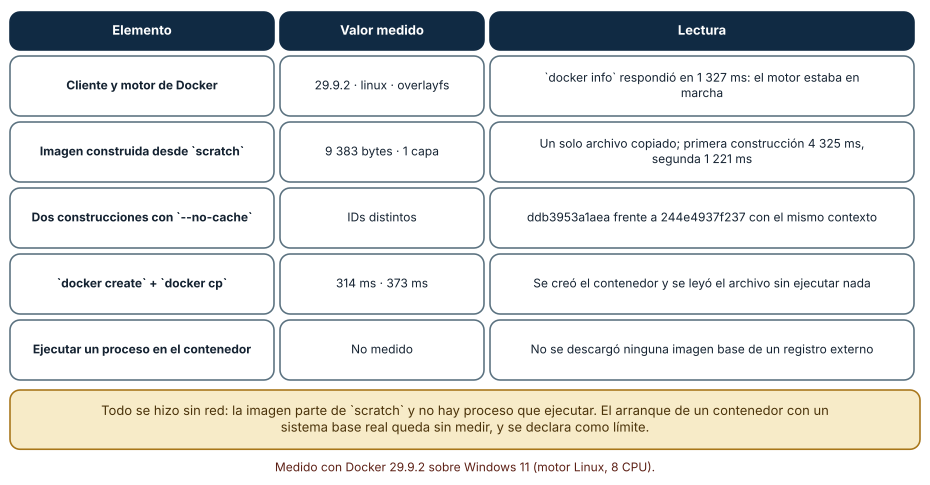
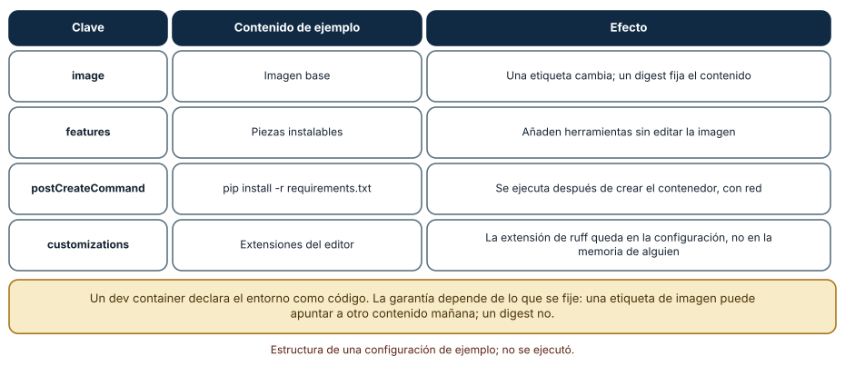
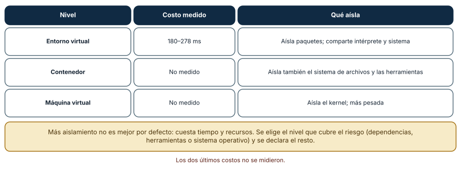

← SE-103 — Entornos virtuales y aislamiento de dependencias · ↑ Parte 08 · 📚 Índice completo · 🌐 Portal · SE-105 — Reproducción de errores y reducción de casos →
Punto profesional y fundamento pedagógico
Punto profesional. La clase existe para declarar un entorno de desarrollo desechable por imagen, features, mounts y ciclo de vida.
Por qué aparece aquí. Se sitúa después de Entornos virtuales y aislamiento de dependencias y antes de Reproducción de errores y reducción de casos: convierte el conocimiento anterior en una decisión observable que la clase siguiente podrá reutilizar. La continuidad se comprueba en el artefacto, no por compartir vocabulario.
Error conceptual que debe corregir. Confundir reconstrucción con estado persistente o imagen con configuración completa.
Secuencia de aprendizaje. Antes de leer la solución, el estudiante predice el resultado del caso normal y del error conceptual anterior. Luego explica un caso resuelto paso a paso, construye un contraejemplo que cambie la decisión y, sin consultar el texto, reconstruye el mecanismo y lo aplica a una entrada nueva. La secuencia usa predicción, explicación propia, contraste y recuperación. ICAP distingue participación de construcción de conocimiento; How People Learn II exige conectar conocimiento previo, contexto y transferencia; la práctica de recuperación respalda producir de nuevo la explicación tras una demora; y Education for Life and Work exige devolución que explique la causa del error.
Evidencia de aprendizaje. Devcontainer-evidence.md con build, create, post-create, rebuild y limpieza. Debe contener predicción previa, observación, explicación causal, contraejemplo, criterio de aceptación y una nota de qué dato haría cambiar la conclusión.
Límite de la conclusión. La reproducibilidad depende también de imágenes y registros externos.
Trazabilidad fuente → afirmación
| Fuente primaria u oficial | Afirmación que respalda | Lo que no prueba |
|---|---|---|
| Development Container Specification | Configuración reproducible de herramientas y ciclo de vida del contenedor; autoridad: Dev Container Specification maintainers | No demuestra por sí sola que el artefacto del estudiante sea correcto. |
| Python venv | Aislamiento de intérprete, scripts y entorno virtual; autoridad: Python Software Foundation | No demuestra por sí sola que el artefacto del estudiante sea correcto. |
Antes de empezar
Esta clase continúa el entorno reproducible de diagnóstico de la Parte 08. Recupera la evidencia de la clase anterior, añade una decisión propia de Dev Containers y entornos desechables y deja un artefacto que la clase siguiente deberá consumir. La pregunta activa es: ¿Qué debe declarar un Dev Container para ser reconstruible, seguro y prescindible?
Prerrequisitos
- Haber completado la clase anterior o reconstruir su contrato y evidencia.
- Python 3.11 o posterior, terminal, editor y Git; un segundo runtime es opcional y debe declararse.
- Trabajar con fixtures sintéticos: ninguna observación necesita datos de una persona o sistema real.
Problema auténtico
El entorno reproducible de diagnóstico funciona en un contenedor antiguo creado manualmente. Al reconstruir, una etiqueta flotante cambia herramientas y el bind mount expone credenciales del host.
Objetivos observables
Al terminar podrás explicar los cinco mecanismos de esta clase, predecir su comportamiento antes de ejecutar, construir un caso normal y uno límite, diagnosticar el fallo controlado, comparar una alternativa y entregar evidencia que otra persona pueda reproducir.
Mapa conceptual
Ver la notación fuente del diagrama
flowchart LR
N1[Contenedor de desarrollo] --> N2[Imagen, tag / digest] --> N3[Workspace, mounts / permisos] --> N4[Lifecycle / caché] --> N5[Desechabilidad / persistencia]
N5 -->|fallo o cambio| N1El mapa se lee como una cadena de razonamiento, no como fases obligatorias del runtime. La flecha de retorno indica que un fallo o cambio de requisito obliga a revisar el modelo inicial; no autoriza a parchear solo la última salida.
Temas y por qué importan
| Tema | Por qué cambia una decisión profesional | Evidencia mínima |
|---|---|---|
| Contenedor de desarrollo | Un dev container describe imagen, features, mounts, usuario, puertos y lifecycle para trabajar en un entorno aislado. | Predicción, traza causal y contraejemplo de Contenedor de desarrollo en devcontainer-evidence.md |
| Imagen, tag y digest | Una imagen aporta filesystem y metadata por capas. | Predicción, traza causal y contraejemplo de Imagen, tag y digest en devcontainer-evidence.md |
| Workspace, mounts y permisos | Bind mounts comparten archivos del host y heredan diferencias de permisos, case sensitivity y rendimiento. | Predicción, traza causal y contraejemplo de Workspace, mounts y permisos en devcontainer-evidence.md |
| Lifecycle y caché | Crear, iniciar y adjuntar disparan comandos distintos. | Predicción, traza causal y contraejemplo de Lifecycle y caché en devcontainer-evidence.md |
| Desechabilidad y persistencia | El contenedor debe poder borrarse sin perder código; volúmenes persistentes se enumeran y limpian con cuidado. | Predicción, traza causal y contraejemplo de Desechabilidad y persistencia en devcontainer-evidence.md |
Conceptos y decisiones
1. Contenedor de desarrollo
Un dev container describe imagen, features, mounts, usuario, puertos y lifecycle para trabajar en un entorno aislado. Reutiliza tecnología de contenedores, pero su objetivo es experiencia de desarrollo, no demostrar paridad productiva.
2. Imagen, tag y digest
Una imagen aporta filesystem y metadata por capas. Un tag puede moverse; un digest identifica contenido. Fijar digest mejora repetibilidad, pero también exige proceso de actualización por seguridad. El Dockerfile o Containerfile documenta pasos propios.
3. Workspace, mounts y permisos
Bind mounts comparten archivos del host y heredan diferencias de permisos, case sensitivity y rendimiento. Montar socket del motor o home concede capacidades amplias. Se usa el mínimo y se prueba ownership de archivos generados.
4. Lifecycle y caché
Crear, iniciar y adjuntar disparan comandos distintos. Un postCreate debe poder repetirse o declarar efectos. Cache acelera builds, pero una reconstrucción sin cache ayuda a descubrir dependencia oculta.
5. Desechabilidad y persistencia
El contenedor debe poder borrarse sin perder código; volúmenes persistentes se enumeran y limpian con cuidado. Datos importantes viven en repositorio o backup explícito. funciona en mi contenedor sigue siendo local si nadie puede reconstruirlo.
Qué se puede medir de un contenedor sin descargar nada
Con el motor de Docker en marcha (versión 29.9.2, Linux, controlador overlayfs) se midió lo que no exige un registro externo. docker info respondió en 1 327 ms. Se construyó una imagen desde scratch con un solo archivo: pesa 9 383 bytes y tiene una capa; la primera construcción tardó 4 325 ms y la segunda, con --no-cache, 1 221 ms. Las dos construcciones, con exactamente el mismo contexto, produjeron identificadores distintos (ddb3953a1aea y 244e4937f237): la imagen incluye marcas de tiempo, igual que la rueda de Python de SE-108. docker create tomó 314 ms y docker cp leyó el archivo en 373 ms sin ejecutar nada. No se midió el arranque de un proceso con un sistema base real, porque eso exige descargar una imagen de un registro externo; es un límite declarado, y afirmar un tiempo de arranque sin medirlo sería inventar un dato.

Cómo leer la figura. La columna central separa lo comprobado de lo no comprobado. Dónde deja de valer: son tiempos de un equipo, con una imagen mínima y capas ya preparadas; una imagen con un sistema base y dependencias pesa cientos de megabytes y tarda mucho más. Falta medir el arranque de un proceso y el postCreateCommand.
Anatomía de un dev container
Un devcontainer.json de ejemplo declara cinco claves: name, image, features, postCreateCommand y customizations. La imagen base fija el sistema; las *features* añaden herramientas sin editar la imagen; postCreateCommand ejecuta una instalación (por ejemplo pip install -r requirements.txt) después de crear el contenedor, y necesita red; las personalizaciones fijan extensiones del editor (aquí, la de ruff), de modo que la configuración del editor deja de depender de la memoria de alguien. La garantía depende de lo que se fije: una etiqueta de imagen (python:3.12) puede apuntar a otro contenido mañana; un *digest* identifica un contenido exacto.

Cómo leer la figura. Cada clave se asocia a un efecto y a una advertencia sobre lo que fija. Dónde deja de valer: la tabla describe un ejemplo; la especificación admite más propiedades (puertos, montajes, usuario) con sus propios riesgos.
Niveles de aislamiento y su costo
Un entorno virtual se creó en 180–278 ms y aísla paquetes; comparte intérprete y sistema. Un contenedor aísla además el sistema de archivos y las herramientas: crearlo (sin arrancar ningún proceso) tomó 314 ms. Una máquina virtual aísla el kernel y pesa más; su costo *no se midió* en esta clase. La conclusión práctica es elegir el nivel por el riesgo que cubre: dependencias de Python (entorno virtual), herramientas del sistema y versiones de bibliotecas nativas (contenedor), o un sistema operativo distinto (máquina virtual). Más aislamiento no es mejor por defecto: cuesta tiempo, memoria y complejidad.

Cómo leer la figura. Crear un contenedor (314 ms) no es lo mismo que arrancar uno; la celda «No medido» es parte de la evidencia. Dónde deja de valer: la jerarquía entre niveles es conceptual; en la práctica, los contenedores en Windows y macOS corren sobre una máquina virtual ligera, y el costo cambia.
Definiciones de trabajo
- contenedor de desarrollo: un dev container describe imagen, features, mounts, usuario, puertos y lifecycle para trabajar en un entorno aislado.
- imagen, tag y digest: una imagen aporta filesystem y metadata por capas.
- workspace, mounts y permisos: bind mounts comparten archivos del host y heredan diferencias de permisos, case sensitivity y rendimiento.
- lifecycle y caché: crear, iniciar y adjuntar disparan comandos distintos.
- desechabilidad y persistencia: el contenedor debe poder borrarse sin perder código; volúmenes persistentes se enumeran y limpian con cuidado.
Las definiciones son operativas para el entorno reproducible de diagnóstico. No convierten términos con historia más amplia en sinónimos y deben contrastarse con la documentación primaria enlazada al final.
Ejemplo mínimo
{
"name": "diagnostic_environment-algorithm_library",
"image": "mcr.microsoft.com/devcontainers/python:3.12",
"remoteUser": "vscode",
"postCreateCommand": "python -m unittest -v"
}Antes de ejecutar, predice estado, resultado y error. Después registra versión, comando y salida. Si el fragmento es pseudocódigo o pertenece a otro lenguaje, etiquétalo como tal y no afirmes que fue ejecutado.
Ejemplo profesional
En el entorno reproducible de diagnóstico, una investigación conserva síntoma, entorno, reproducción, hipótesis, observaciones, causa, corrección y regresión. La implementación de esta clase debe conservar ese contrato aunque cambie la forma interna. El caso profesional no pregunta únicamente si produce una salida: pregunta quién puede producirla, qué estado observa, cómo falla y qué rastro permite disputar una decisión incorrecta.
Compara el caso normal con autorización falsa, evidencia incompleta, empate y repetición. Un mecanismo es apropiado cuando esas diferencias quedan visibles y localizadas; es peligroso cuando dependen de orden accidental, estado oculto o una convención que el consumidor no puede conocer.
Práctica guiada
- Copia el contrato de entrada y salida antes de escribir implementación.
- Predice el caso normal y un límite; identifica la invariante que no puede romperse.
- Implementa la versión mínima sin I/O dentro del núcleo.
- Ejecuta el caso y conserva comando, versión y salida bajo
evidence/. - Introduce el fallo controlado, reduce la reproducción y formula dos hipótesis rivales.
- Corrige la causa, añade regresión y ejecuta el conjunto completo.
- Compara con otro paradigma o lenguaje indicando qué semántica se preserva.
Ejercicios
- Estructura: escribe un
devcontainer.jsonmínimo para un proyecto de Python con ruff y explica qué fija cada clave. - Fijación: compara una etiqueta y un digest, y describe qué ocurre si la etiqueta se mueve.
- Verificación: escribe los comandos que comprueban que el motor responde antes de abrir el proyecto.
- Nivel: elige el nivel de aislamiento (entorno virtual, contenedor o máquina virtual) para tres escenarios y justifica con el riesgo que cubre.
Reto verificable
Entrega implementación, fixtures, pruebas y un informe corto. Se aprueba si otra persona ejecuta desde checkout limpio, obtiene los mismos resultados y puede relacionar cada rama o transformación con una regla del dominio. No se aprueba por cantidad de archivos ni por usar la sintaxis característica del paradigma.
Caso conductor
El entorno reproducible de diagnóstico parte de una inversión de empates en la biblioteca de estructuras y algoritmos, captura versión y entrada mínima, compara un entorno sano con uno afectado y conserva la primera divergencia observable. Cambia después una sola regla o condición y revisa qué archivos, pruebas y trazas debieron modificarse. Esa superficie de cambio alimenta el proyecto final de la parte.
Preguntas frecuentes
¿Un contenedor es una máquina virtual?
No. Un contenedor comparte el kernel del anfitrión y aísla procesos, red y archivos; una máquina virtual ejecuta su propio kernel. En Windows y macOS el contenedor corre dentro de una máquina virtual ligera, lo que mezcla ambos costos.
¿Por qué usar un dev container?
Para que el entorno de desarrollo sea el mismo para todas las personas y la CI, y se pueda reconstruir desde el repositorio. Reduce el «en mi máquina funciona».
¿Qué fija una etiqueta de imagen?
Un nombre mutable: quien publica puede moverla a otro contenido. Para reproducibilidad se usa el digest (@sha256:…) y se actualiza de forma deliberada.
¿Qué riesgos tiene un postCreateCommand?
Ejecuta código arbitrario al abrir el proyecto y suele necesitar red; abrir un repositorio no confiable en un dev container puede ejecutar ese comando. Se revisa antes de abrir.
Fallo controlado y diagnóstico
Monta el socket del motor para resolver un comando y observa la ampliación de privilegios. Elimina el mount o documenta una alternativa aislada; valida desde rebuild sin cache.
Registra síntoma, entrada mínima, hipótesis, observación que descarta cada hipótesis, causa, corrección y prueba de regresión. No cambies simultáneamente implementación, fixture y expectativa.
Comprueba la dependencia de un motor que puede no estar en marcha. Con Docker Desktop cerrado ejecuta docker version y docker info. Síntoma: el cliente muestra su versión pero el servidor devuelve un error de conexión (esto se observó al inicio de la medición, antes de levantar el motor). Hipótesis: el motor no está en marcha. Prueba: arranca el servicio y repite docker info; con el motor activo responde en torno a 1,3 s. Conclusión: el cliente y el motor son procesos distintos; el éxito de docker --version no demuestra que se pueda ejecutar un contenedor. Anota en tooling-map.md cómo verificas el motor antes de abrir el proyecto y qué hace el equipo cuando no está disponible (un entorno virtual como alternativa degradada).
Errores comunes y cómo corregirlos
| Síntoma | Causa | Corrección |
|---|---|---|
docker responde pero no se puede ejecutar nada | El motor no está en marcha | Verificar el servidor con docker info |
| La imagen cambia sin que el repositorio cambie | Etiqueta mutable | Fijar el digest |
| Abrir el proyecto ejecuta código inesperado | postCreateCommand no revisado | Revisar el comando antes de abrir |
| El contenedor es lento en Windows o macOS | Máquina virtual intermedia y archivos montados | Usar volúmenes nombrados para dependencias |
| Se asume que el contenedor es seguro | Se confunde aislamiento con confianza | Tratar el contenido como código no confiable |
Entorno y archivos clave
work/SE-104/
├── README.md
├── diagnostic_environment/
│ ├── domain.py
│ └── se_104.py
├── fixtures/cases.json
├── tests/test_se_104.py
└── evidence/diagnosis.mdEl README declara plataforma, runtimes, comandos, limpieza y límites. Evita dependencias externas cuando la biblioteca estándar permita observar el mecanismo; si agregas una, fija procedencia y versión.
Seguridad, ética y accesibilidad
- la autorización forma parte del dominio y no se infiere por ausencia de rechazo;
- no uses
eval, reglas descargadas ni serialización insegura; - limita colas, recursión, tamaño de entrada y tiempo de evaluación;
- redacta trazas y conserva una explicación textual además de color o animación;
- una recomendación automatizada debe poder revisarse, impugnarse y corregirse;
- respeta licencias de ejemplos y atribuye adaptaciones.
Puente hacia el trabajo con agentes
Un contenedor desechable es el entorno natural para un agente que ejecuta código: si algo sale mal, se descarta. Pero no es un sandbox por sí solo: con montajes del sistema de archivos del anfitrión, redes abiertas o credenciales en variables, el agente puede hacer daño fuera. El harness fija qué se monta, qué red existe y qué credenciales se pasan. La verificación de que el motor responde, y un plan degradado si no lo hace, forman parte del diseño.
Transferencia
Traslada un fixture al segundo modelo, herramienta, plataforma o lenguaje. Compara representación de ausencia, error, mutabilidad, orden y cancelación. La transferencia está lograda cuando el contrato se conserva y las diferencias están explicadas, no cuando la interfaz se parece.
Evaluación y evidencia
| Criterio | Evidencia para aprobar |
|---|---|
| comprensión | explicación causal de los cinco mecanismos |
| corrección | normal, límite, inválido y contraejemplo |
| diseño | estado, efectos y contrato localizables |
| diagnóstico | reproducción mínima y regresión |
| transferencia | comparación semántica, no estética |
| reproducibilidad | versiones, comandos, salida y límites |
Fuentes
- Language Server Protocol 3.18 — Mensajes, capacidades y sincronización entre editor y servidor; autoridad: Microsoft.
- Debug Adapter Protocol — Breakpoints, frames, variables y negociación de capacidades; autoridad: Microsoft.
- Python Debugging and Profiling — Pdb, cprofile, timeit, tracemalloc y límites instrumentales; autoridad: Python Software Foundation.
- Python venv — Aislamiento de intérprete, scripts y entorno virtual; autoridad: Python Software Foundation.
- Development Container Specification — Configuración reproducible de herramientas y ciclo de vida del contenedor; autoridad: Dev Container Specification maintainers.
- Web Content Accessibility Guidelines 2.2 — Percepción, operación por teclado y reducción de barreras en interfaces; autoridad: W3C.
Cada fuente respalda el mecanismo indicado; ninguna demuestra que la implementación del entorno reproducible de diagnóstico sea correcta. Esa afirmación depende de fixtures, pruebas, trazas y revisión reproducible.
- Especificación de dev containers: referencia de
devcontainer.json: propiedadesimage,features,postCreateCommandycustomizations. - Docker: cómo funcionan los contenedores: arquitectura cliente-motor y aislamiento.
- Docker: fijar imágenes por digest: razones y forma de fijar el contenido de una imagen.
Límites y siguiente paso
Un contenedor estable no reduce automáticamente un fallo. La siguiente clase aplica delta debugging manual y control de variables para obtener un caso mínimo.
Glosario
- contenedor de desarrollo: un dev container describe imagen, features, mounts, usuario, puertos y lifecycle para trabajar en un entorno aislado.
- imagen, tag y digest: una imagen aporta filesystem y metadata por capas.
- workspace, mounts y permisos: bind mounts comparten archivos del host y heredan diferencias de permisos, case sensitivity y rendimiento.
- lifecycle y caché: crear, iniciar y adjuntar disparan comandos distintos.
- desechabilidad y persistencia: el contenedor debe poder borrarse sin perder código; volúmenes persistentes se enumeran y limpian con cuidado.
← SE-103 — Entornos virtuales y aislamiento de dependencias · ↑ Parte 08 · 📚 Índice completo · 🌐 Portal · SE-105 — Reproducción de errores y reducción de casos →